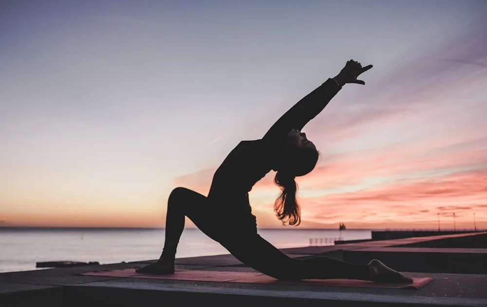

01
Spine & PainDiscuss your care ↗
Marma Chikitsa (മർമ്മ ചികിത്സ)
Ancient vital pressure point therapy for immediate pain relief and anatomical re-alignment.
Explore this treatment
- Relieves acute nerve compression
- Corrects postural imbalances
- Restores joint flexibility without surgery
Typical programme: 7 - 21 Days. Your care plan is determined at consultation.
